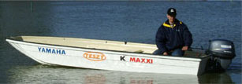
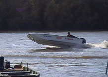
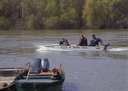

boat and motor tests
|  |

On 8th of April 2004 the Hírös Hajó Company and the YAMAHA MOTOR HUNGÁRIA KFT. searched an answer for that frequently asked question, what type of engine should we choose to the K MAXXI 4.60 with a bottom of catamaran which is beloved by anglers because of its stability and the K MAXXI EXTRA 5.45 There is also a question what kind of output can be reached at different loading.
The test passed off at Kormorán port (www.kormorankikoto.hu) on the Tisza in sunshine, 15 oC, windy weather.
We tested 2 and 4-stroke engines, we used the engines with maximum rev, we measured our maximum speed with the help of a GPS. There is no place here for detailed analysis, further pictures and information can be found at Internet addresses. With the help of the attached tables it can be decided that beside average loading with what type of engine do we reach the desired speed and the most economical operation. To any other question we give you answer with pleasure by phone (see below telephone numbers).
| K MAXXI 4.60 | ||||||||||||
| jogosítvány nélkül vezethetõ | jogosítvánnyal vezethetõ | |||||||||||
| F4AMHS 7,5 x 6,5 |
5CMHC 7,5 x 6,5 |
6CMHS 8,5 x 6,5 |
F8CMHS 8,5 x 6,5 |
F15AMHS 9,5 x 10,5 |
F25AMHS 9,5 x 10,5 |
|||||||
| rate of charging | 4 ütem | 2 ütem | 2 ütem | 4 ütem | ||||||||
| boat + motor + 1 person + pack | 132 kg-tól 432 kg-ig |
15 km/h | 131 kg-tól 471 kg-ig |
16 km/h | 137 kg-tól 477 kg-ig |
23,5 km/h | 147 kg-tól 467 kg-ig |
26 km/h | 155 kg-tól 467 kg-ig |
39,2 km/h | 172 kg-tól 492 kg-ig |
44 km/h |
| boat + motor + 2 persons + pack | 12,5 km/h | 13 km/h | 20,2 km/h | 24,3 km/h | 35 km/h | 41 km/h | ||||||
| boat + motor + 3 persons + pack | 9,5 km/h | 10,5 km/h | 16,8 km/h | 19 km/h | 32 km/h | 39,5 km/h | ||||||
| boat + motor + 4 persons + pack | 9,3 km/h | 10 km/h | 12,7 km/h | 14,8 km/h | 29 km/h | 37,5 km/h | ||||||
| boat + motor + 5 persons + pack | 9,2 km/h | 9,9 km/h | 11 km/h | 11,5 km/h | 22 km/h | 36 km/h | ||||||
| fogyasztás (liter/h) | 1,0 | 2,1 | 2,7 | 2,3 | 2,9 | 4,4 | ||||||
| K MAXXI EXTRA 5.45 | ||||||||||||
| jogosítvány nélkül vezethetõ | jogosítvánnyal vezethetõ | |||||||||||
| F4AMHS 7,5 x 6,5 |
5CMHC 7,5 x 6,5 |
6CMHS 8,5 x 6,5 |
F8CMHS 8,5 x 6,5 |
F15AMHS 9,5 x 10,5 |
F25AMHS 9,5 x 10,5 |
|||||||
| rate of charging | 4 ütem | 2 ütem | 2 ütem | 4 ütem | ||||||||
| boat + motor + 1 person + pack | 132 kg-tól 510 kg-ig |
16 km/h | 131 kg-tól 550 kg-ig |
17.3 km/h | 137 kg-tól 561 kg-ig |
23,2 km/h | 146 kg-tól 550 kg-ig |
26 km/h | 154 kg-tól 580 kg-ig |
38 km/h | 171 kg-tól 475 kg-ig |
44 km/h |
| boat + motor + 2 persons + pack | 14,5 km/h | 14,1 km/h | 20 km/h | 23 km/h | 35,5 km/h | 42 km/h | ||||||
| boat + motor + 3 persons + pack | 11,2 km/h | 12 km/h | 18 km/h | 19,5 km/h | 31,5 km/h | 40 km/h | ||||||
| boat + motor + 4 persons + pack | 9,6 km/h | 10,5 km/h | 14 km/h | 18 km/h | 28 km/h | 37,5 km/h | ||||||
| boat + motor + 5 persons + pack | 9,5 km/h | 10,3 km/h | 12,5 km/h | 15 km/h | 25 km/h | 36 km/h | ||||||
| boat + motor + 6 persons + pack | 9.3 km/h | 10 km/h | 12 km/h | 11 km/h | 17 km/h | 34 km/h | ||||||
| fogyasztás (liter/h) | 1,0 | 2,1 | 2,7 | 2,3 | 2,9 | 4,4 | ||||||
|  |  |  |
Attention! Incontrollable quality reproducitons are in circulation!
| Designer and producer of the boats: Imre Juharos chartered engineer 30 9788-120 |
 |
Vendor of motors: Yamaha Motor Hungária Kft. 1112 Bp, Budaörsi út 227 06 1 247-1522 |